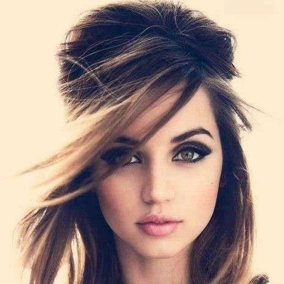

Sejal Kumar
Edit

Follow
Sejal Kumar
@sejalkumar
Fashion Blogger
Total Views: 11.5 million
3.4 million Followers 21 Following
About
Sejal Kumar is an indian YouTube personality and video blogger. She started her YouTuber channel in February 2014. She has gained more than one million subscribers and has over 100 million views. Her YouTube channel is Sejal Kumar and her content is mainly Fashion, Skits, Dance and Music.
Videos
The outfit challenge this summer will give you an edge | Sejal Kumar
#summerclothing #girls #tops #newdress
@SejalKumar Was Live 2 days ago | 322k Views